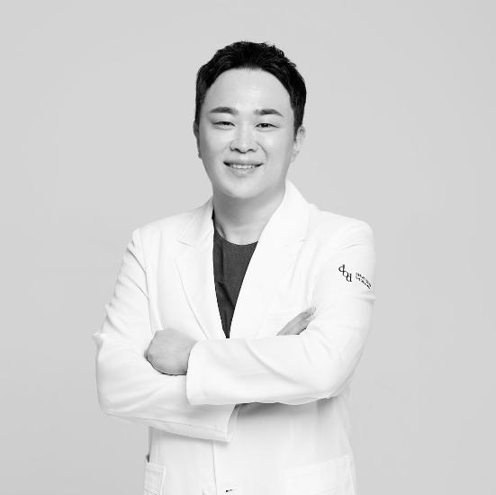
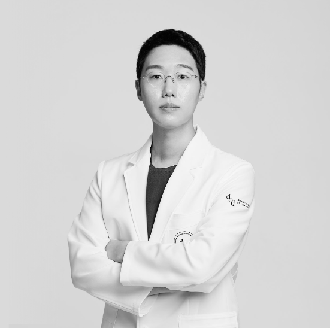
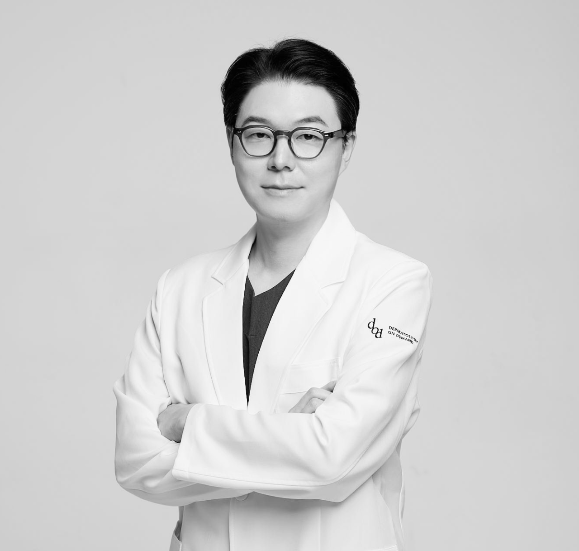
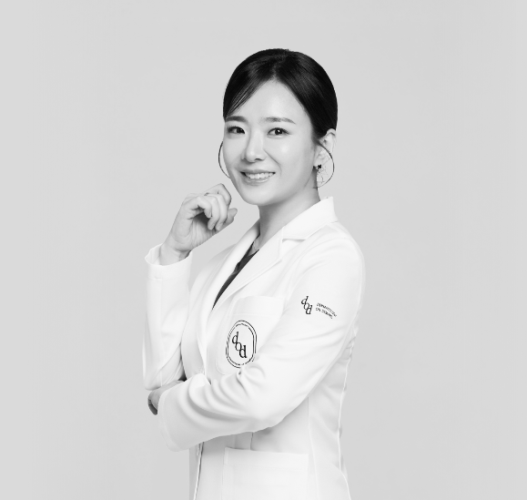

dod dermatology cheongdam is a Ministry of Health and Welfare–designated Advanced Regenerative Medicine Institution — the first dermatology clinic in Korea to hold this designation. Every stem cell protocol is physician-led, evaluated case by case, and grounded in clinical evidence rather than trend.
Stem cells are undifferentiated cells capable of self-renewal and, under the right signaling, of directing tissue toward repair. In dermatology and regenerative aesthetics, this translates to supporting the skin's own regenerative capacity — collagen architecture, tissue density, and cellular turnover — rather than masking the signs of aging.
At dod dermatology cheongdam, stem cell–based protocols are one part of a broader regenerative framework that includes exosome therapy, collagen stimulators, and device-based lifting — sequenced according to each patient's diagnostic findings, not a fixed package.
Regenerative medicine in Korea is closely regulated. Any protocol involving cultured or processed stem cells is administered only within the scope permitted under the Ministry's Advanced Regenerative Medicine designation, following a documented clinical evaluation.
E‑NA CELL is the clinic's in-house stem cell program, differentiated by intended application rather than offered as a single generic protocol.
Formulated to support overall skin regeneration and structural recovery — the clinic's foundational protocol for general skin quality concerns.
Directed toward tissue conditions that benefit from a more targeted regenerative and anti-inflammatory approach.
Designed for cases requiring deeper structural support, used in combination with the clinic's lifting and contouring protocols.
Focused on immune-modulatory support as part of a broader regenerative and wellness-oriented treatment plan.
Every stem cell consultation is reviewed within this medical team — not delegated to a single practitioner working alone.




Korea's Advanced Regenerative Medicine framework requires institutional approval and case-level review — dod dermatology cheongdam operates within this structure, not around it.
Treatment plans begin with imaging-based skin analysis (MetaView, Morpheus 3D) so that any stem cell protocol is matched to documented tissue findings, not a standard menu.
Consultations and treatments take place in dedicated private suites, with post-treatment care in the same space — no shared bays, no rotating staff.
Regenerative medicine, including stem cell and exosome-based therapy, is an evolving clinical field. Certain protocols offered under Korea's Advanced Regenerative Medicine framework are approved for specific, case-reviewed use — this is not the same as a treatment being broadly indicated for all patients or concerns.
Individual response varies by tissue condition, treatment history, and diagnosis. During consultation, Dr. Lee and the clinical team will outline what a given protocol is, and is not, expected to address before any treatment is scheduled.
No. Skin boosters such as Rejuran or Juvelook are injectable formulations designed to hydrate and stimulate collagen. Stem cell therapy works at the cellular level and is administered under the clinic's Advanced Regenerative Medicine designation, following a separate diagnostic and consultation process.
Candidacy is determined during an in-person consultation and diagnostic skin evaluation with Dr. Lee or a member of the medical team, based on your skin condition, medical history, and treatment goals.
Yes. The clinic regularly consults with international patients in English, and can coordinate scheduling around a Seoul visit. Reach out via the contact options below to begin a consultation.
Because each E‑NA CELL protocol is matched to individual diagnostic findings, pricing is confirmed during consultation rather than published as a fixed package.
Every regenerative protocol at dod dermatology cheongdam begins with a diagnostic evaluation. Reach out to arrange a consultation with the medical team in Cheongdam, Seoul.